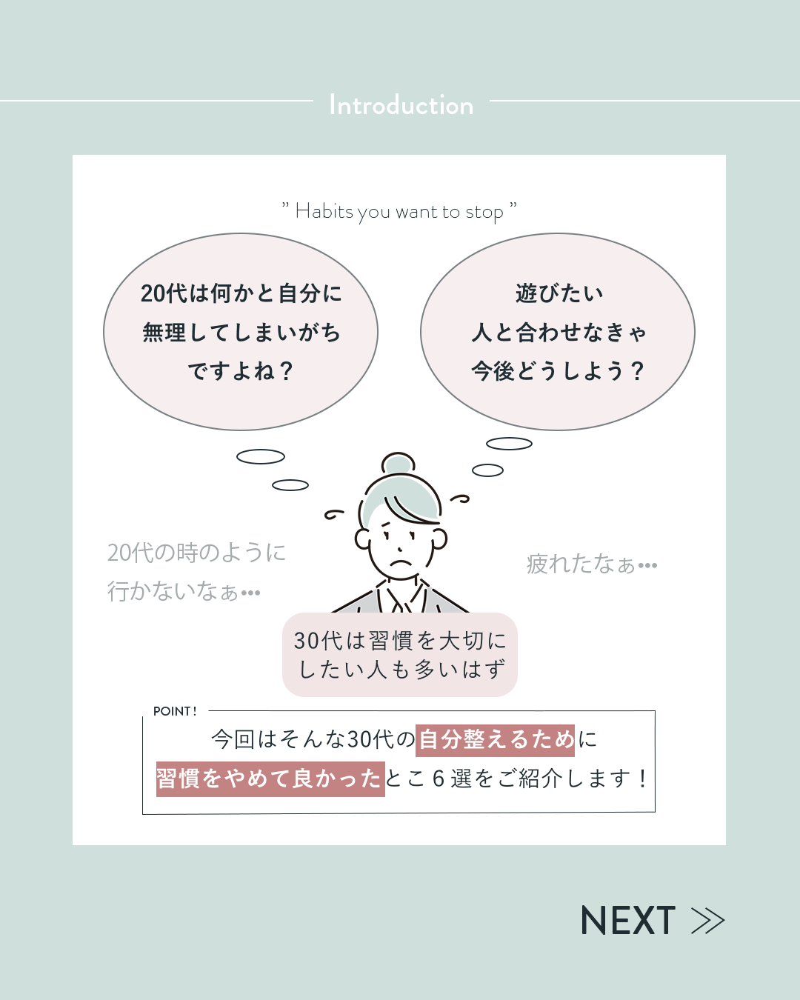
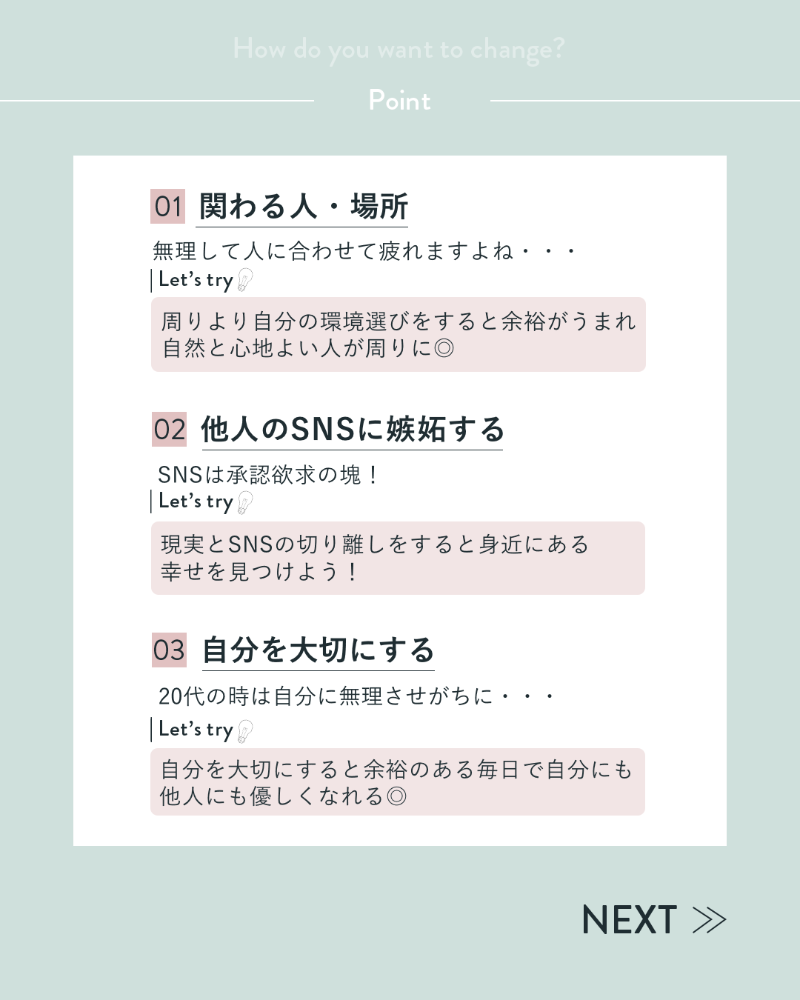
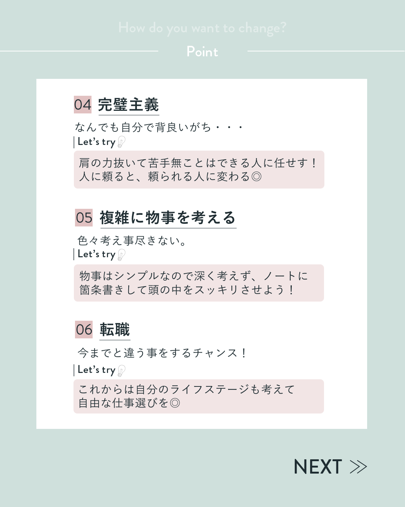

20代は人付き合いや自己成長を優先するあまり、無理をしてしまうことが多い。
30代になると生活や価値観が変化し、「無理のない習慣づくり」
「自分を大切にする生き方」への関心が高まる。
しかし、漠然と「習慣を変えたい」と思っても、
具体的に何をやめるべきか分からず行動につながりにくい課題があった。
冒頭で「20代は無理しがち」「人に合わせると疲れる」といったセリフを配置し、ターゲット層（30代）の共感を引き出す。
「関わる人・場所」「SNS比較」「完璧主義」など、やめると生活が整う習慣を6つに整理し、分かりやすく提示。
各項目に小さな改善アクションを添えることで、読んだその日から実践できる内容に。
淡いグリーンとシンプルなレイアウトで安心感を演出し、自己啓発的なテーマでも押し付けがましくならない工夫を施した。
各ページに「NEXT」を配置し、スクロールしながら自然に読み進められる体験を設計。


